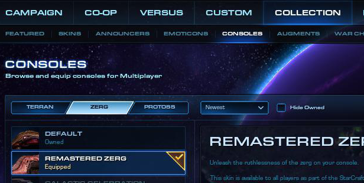

Очевидные хоткеи [+]
Чтобы сделать хоткеи очевидными, нужно сменить язык игры на английский. Почему? Потому что в русской локализации кнопка D соответствует «трутень», а в английской — «Drone», E — в русской локализации «зонд», а в английской — «probE», V — «надзиратель» и «oVerlord».
Быстро кастовать, rapid fire [+]
Чтобы кинуть шторм, нормальному игроку нужно нажать T и кликнуть в точку, куда будет брошен шторм, сfire помощью Rapid fire делать это проще: нажать T дважды, наведя курсор на точку, что позволяет не пользоваться шифтом. Как реализовать:
- Сохраняем текущую раскладку в игре, например как RapidFire, выключить игру.
На Windows открываем блокнотом
«Документы\StarCraft II\Accounts\%цифирька%\Hotkeys\RapidFire.SC2Hotkeys»На macOS открываем TextEdit'ом
«~/Library/Application Support/Blizzard/StarCraft II/Accounts/%цифирька%/Hotkeys/RapidFire.SC2Hotkeys»Добавляем где угодно после [Hotkeys] и до [Commands] строчку:
TargetChoose=LeftMouseButton,Q,W,E,R,T,Y,U,I,O,P,A,S,D,F,G,H,J,K,L,Z,X,C,V,B,N,MСохраняем, запускаем игру и наслаждаемся удобным управлением.
Текущий APM в матче [+]
Чтобы знать свой текущий APM во время матча, нужно выбрать Remastered-тему консоли. Для этого в главном меню щёлкаем на Collection → Consoles → %раса% → Remastered %раса%.
Мины за зерга [+]
Если закопать бейнлинга и нажать alt+R, он выкопается и взорвётся ровно в тот момент, когда в его зоне поражения (а не видимости) окажется противник.